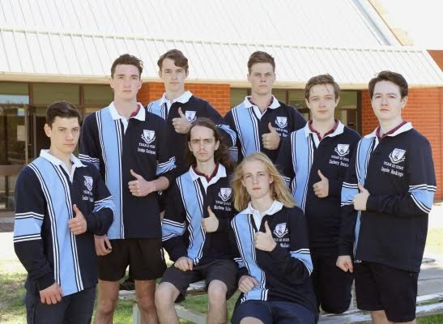
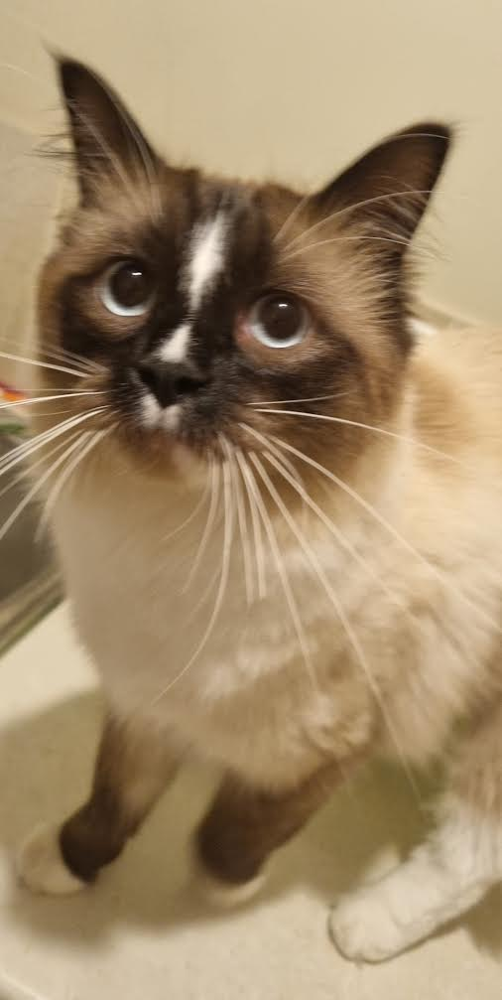
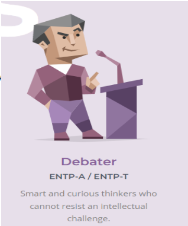

My name is Tyler and I come from rural Victoria I am from a small town in rural Victoria which only had around 400 residents,
it only had 2 businesses, a supermarket and of course a pub. I graduated from high school in 2021 and am now beginning my Bachelor
of IT course here at RMIT. I have minimal experience in programming apart from what I have learnt from this course itself and various
scratch projects from when I was 12-14. I became interested in IT after my primary school had a one-off class introducing the students
to Scratch. I form the ‘T’ initial of team RHAMJET.
My Hobbies include playing video games and just hanging out with my friends. My favorite genre of games are roguelikes such as
Risk of rain, Hades, and Enter the gungeon. but I don't only like roguelikes I also enjoy a good FPS such as Rainbow six siege or
Overwatch although I'm not really that good at them and usually just main a support class. Apart from video games I also enjoy watching movies,
specifically those that have a deep story or interesting premise some of my favorites include Evangelion and Breaking Bad.

Although I have very limited exposure to IT due to my school not offering any opportunities for IT-based classes (apart from year 7 but that
was almost exclusively typing practice for some reason) I am extremely passionate about IT, spending a fair about of my free time when I was
younger writing games on scratch, including making a functional although unfinished copy of Five Nights at Freddy's in scratch
(i was 12 don't bully me). as I've grown older this passion has advanced over to the areas of machine learning and artificial intelligence as these areas strike me as particularly interesting,
although I have no experience in these fields I hope to advance my knowledge through this course and my further studies

At home i have 4 pets that i absolutely adore and 1 that i hate so bloody much. So i have 2 cats, Marcus (left) and Toby and 2 dogs, Bayley and Holly
and finally, a bird named Bob that i hate so much. Both of the cats are Ragdolls which are VERY cute and both of the dogs are cavilers which are
alright i spose, Bob is a quaker parrot and a prick. Both of the dogs are 5 years old, whilst Marcus is 2 and Toby is 1, i dont remember how old Bob is because i dont care about him.
I have a lot of pictures of my pets (apart from Bob) which are shown below

ENTP-A/Multimodal Learner (Kinesthetic & Aural)/High Openness and Extraversion in Big Five
I am the 'Debater' type. Results indicate I am highly extroverted, with strong communication skills.
Intuitive and open-minded suggest creativity and willingness to challenge convention. I learn best
through a combination of listening, discussion, and practical application.
Also here is a link to my beautiful Assignment 1 page